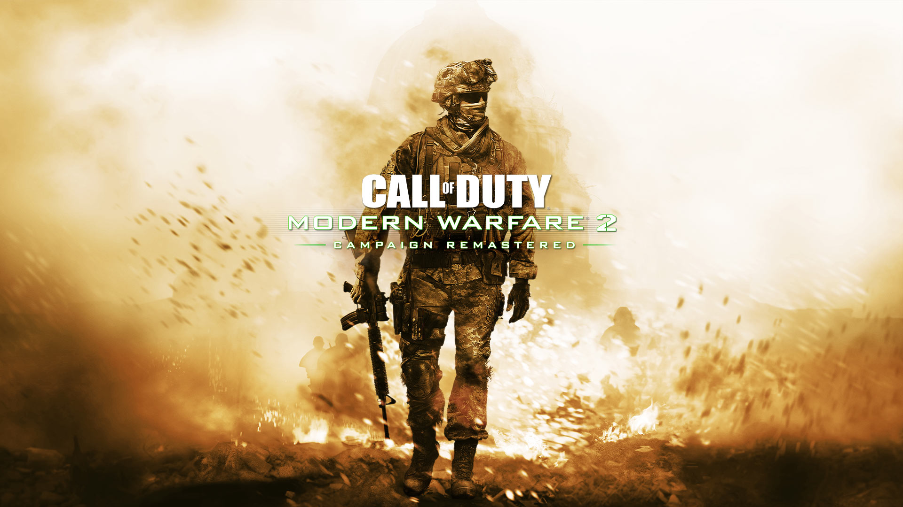

noticias gamers
El mercado de fichajes del Valorant comienza a moverse y la organización argentina despidió a varios de sus integrantes. Este sábado, KRÜ Esports anunció la salida de keznit, delz1k y Mazino, quienes buscarán un nuevo destino de cara a las Ligas Internacionales de 2023. De esta forma, la «Rosa» hará un gran cambio en su roster luego de casi 2 años y deberá rearmarse de cara al VCT del próximo año.
GTA V: después de 3 años, youtuber termina la campaña en modo pacifista

Un YouTuber tarda tres años en comprobarlo. 5 oct. 2022 2:00h. Un YouTuber pasa tres años completando GTA V con el menor número de muertes posible, lo más "pacifista" que puede llegar a ser el juego de la saga Grand Theft Auto; ya de por sí violento.
El disco de Call of Duty: Modern Warfare II está prácticamente vacío
Prepárate para descargar más de 100 GB sin importar si compraste la edición física